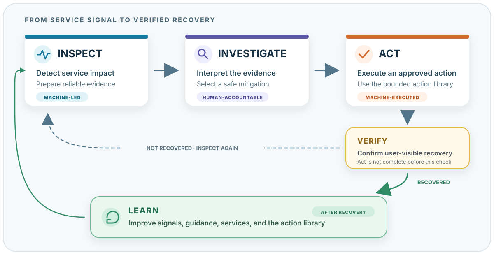

Operating Model⚓︎
EOEPCA services use gateways, workloads, databases, and background components. The operating model helps an operator turn evidence of a user-visible problem into a safe, verified response. It connects monitoring, investigation, action, and learning. It does not replace operator judgement or service-specific knowledge.

The model separates finding a problem, understanding it, changing the system, and improving the next response. It starts with the operator workflow, not a specific tool.
Verify is part of Act: an operation is not complete until the service outcome has been checked. Learn follows recovery and feeds the experience back into the next response.
Operating Rules⚓︎
- Start with the affected user outcome, not with a tool.
- Check the monitoring path when evidence is missing or inconsistent.
- Treat recent changes, logs, and scan findings as evidence. Confirm them with another source before you identify a cause.
- Confirm the action target and preconditions before a change.
- Verify the external service result after a change. A successful command or a healthy Pod is not sufficient.
Observe: Inspect⚓︎
Inspect is machine-led and evidence-first.
Monitoring checks whether a service behaves as users expect. It detects meaningful degradation, connects related signals, and prepares the facts an operator needs.
For an HTTP service, Inspect may combine:
- a synthetic request that fails or becomes slow
- an SLO or error-budget burn-rate alert
- request latency and error metrics
- gateway and upstream timings
- pod health and saturation
- dependency signals
- logs and recent deployment changes
The output should be more useful than a raw alert. It should show the affected service and operation, what users experience, when the problem started, how broad the impact is, and the supporting evidence.
Inspect reports observations. A deployment shortly before an incident is relevant evidence, but it is not automatically the root cause.
Decide: Investigate⚓︎
Investigate is human-accountable and automation-assisted.
The platform should collect and organise evidence safely and consistently. The operator interprets it, tests likely explanations, decides what is known and uncertain, and selects a mitigation.
For a slow STAC request path, the operator may ask:
- is APISIX adding latency, or reporting a slow upstream?
- is the STAC application saturated or restarting?
- is PostgreSQL slow or connection-limited?
- did a recent change plausibly affect the service?
- which action is safe enough to reduce the current user impact?
During an active incident, the operator does not always need the full root cause. They need enough evidence to choose a safe mitigation. Deeper analysis belongs in Learn after the service has recovered.
Human-accountable does not mean manual evidence collection. Dashboards, bounded log queries, dependency checks, timelines, and links to relevant procedures should already be prepared for the operator.
Change: Act and Verify⚓︎
Act is machine-executed and policy-authorised.
Once a mitigation is selected and approved, the system runs a known action the same way each time. The operator chooses from a library of remediation actions instead of assembling commands during an incident.
Verify completes Act.
A finished command or workflow does not mean the action worked. The service must be checked again. A workload restart, for example, is complete only when the workload is healthy, the external request succeeds, the relevant SLO signals recover, and the result remains stable for a suitable period.
If verification fails, the system returns to investigation. It may stop, roll back, retry within a defined limit, or escalate, depending on the action.
Improve: Learn⚓︎
Learn happens after recovery.
The team reviews the incident timeline, deeper causes, missing or misleading signals, the selected action, and the verification result. This should improve how the service is run:
- better metrics, SLOs, or synthetic checks
- clearer investigation guidance
- safer or more useful remediation actions
- stronger preconditions and verification
- follow-up changes that prevent recurrence
Learn should not delay mitigation while users are still affected. It makes the next Inspect, Investigate, and Act cycle better.
End-to-End Example⚓︎
The STAC service-path example applies the operating model end to end to a synchronous HTTP request/response path, from detecting user-visible degradation through investigation, action, verification, and learning.
From Investigate to Act⚓︎
A library of named remediation actions connects Investigate to Act. Operators select a known outcome instead of assembling commands during an incident.
This capability is currently being established. The Remediation Actions page explains the core concept, action requirements, and execution flow.
How the Current Stack Supports the Model⚓︎
| Stage | Current role |
|---|---|
| Inspect | Prometheus, SLO rules, synthetic checks, Alertmanager, and health signals detect and correlate degradation. |
| Investigate | Keep presents alerts and context; Grafana, Loki, Kubernetes, and service-specific signals help the operator narrow the failure domain. |
| Act | A small remediation-action library is being established. Existing scripts and operational procedures can become implementations behind it. |
| Verify | Synthetics, workload health, and the same service signals used by Inspect confirm whether recovery occurred. |
| Learn | The incident record and observed outcomes improve monitoring, guidance, actions, and service design. |
The remaining pages explain the monitoring stack, signals, dashboards, and SLOs that support the model.